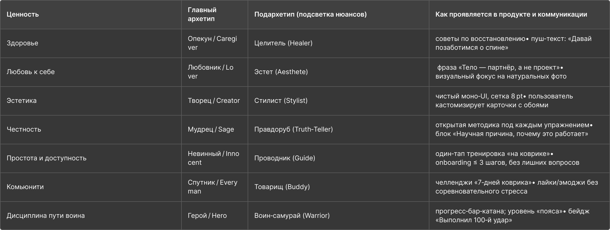
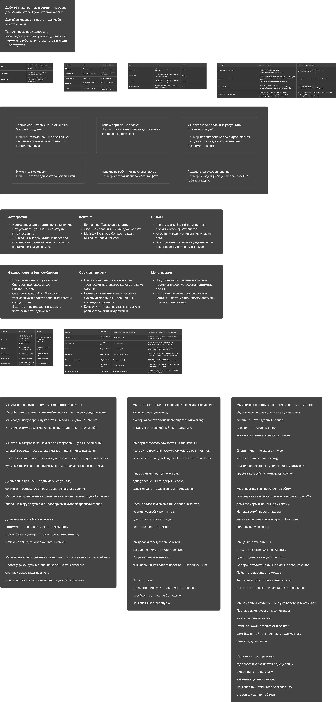
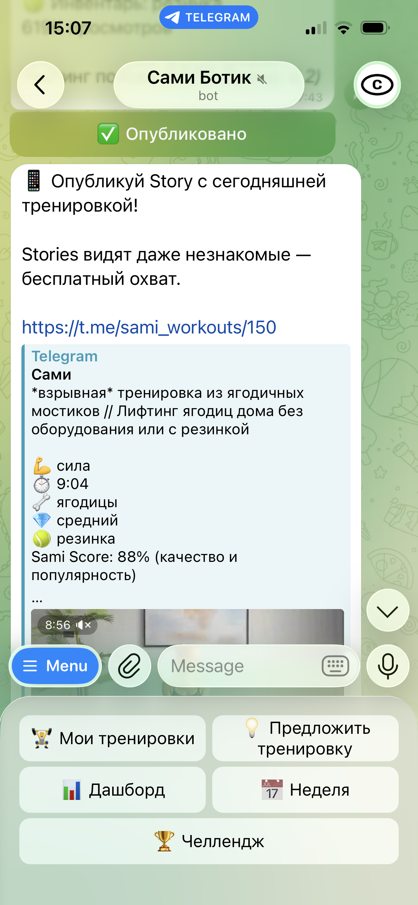
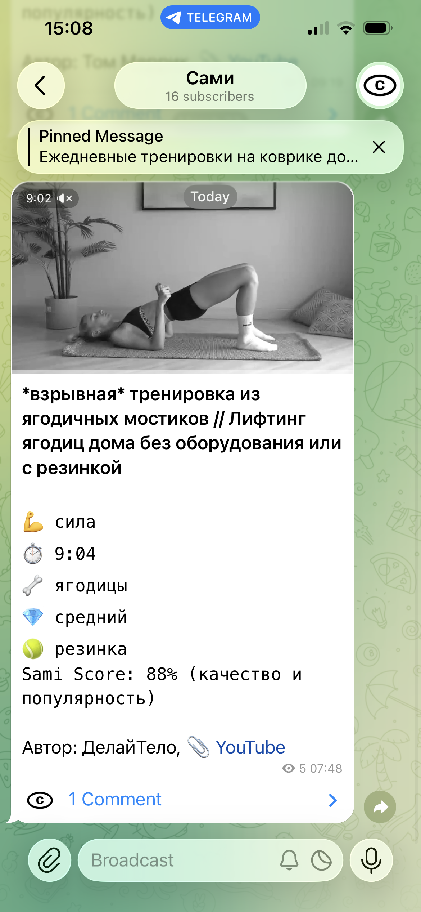

Сами
Одна тренировка в день
Люди хотят двигаться. Открывают YouTube — десять миллионов видео. Двадцать минут ищут подходящее, сдаются, включают сериал.
Проблема не в лени. Каждый день нужно заново решать: что делать, сколько, какого уровня.
Сами — Telegram-канал, который убирает этот выбор. Одна тренировка в день. Только коврик. Стретчинг, сила, мобильность, йога, дыхание, кардио, восстановление — семь категорий, семь дней.
Имя
100+ вариантов нейминга в Figma. Альтернативы: be•come, do•it, m:ove, gr↑ow, al•ign, r•oot. Каждое проверялось на произносимость, запоминаемость, Telegram-юзернейм.
Победило «Сами». Двойное значение: самостоятельность — делаешь сам, без тренера. Совместность — делаем сами, вместе.

Бренд
Шесть ценностей: здоровье, любовь к себе, эстетика, сообщество, простота, честность. Каждая привязана к архетипу — от Опекуна до Воина-самурая.
Позиционирование — от контраста. Типовой фитнес: неон, инвентарь, 5-экранный онбординг, «исправь тело». Сами: zen-minimal, один коврик, один тап, «тело — партнёр, не проект».
Tone of Voice — четыре слоя. Поддержка: «6 минут, чтобы плечи сказали спасибо». Честность: «Пульс +20 уд/мин — нормально». Красота: «Движение выглядит так же хорошо, как ты себя чувствуешь». Воодушевление: «Катану прогресса точим?»
Визуальный стиль: минимализм, настоящие люди без ретуши. Логотип — wordmark «сами» в овале. Восемь шрифтов исследовано, выбран PP Right Grotesk.


Конкурентный анализ
Четыре приложения разобраны экран за экраном: Peloton, FitOn, Freeletics, BetterMe. Онбординг, подписочная модель, тон, визуальный язык. У каждого — свой стиль мотивации: от «до и после» до геймификации силовых.
Вывод один: все строят продукт вокруг инвентаря и трансформации тела. Сами занимает пустое место — минимализм, коврик, ритуал без давления.

Челленджи
Один челлендж — 21 день. Три полных недели. Каждый день привязан к своей категории: понедельник — стретчинг, вторник — сила, среда — мобильность. Помимо 21-дневных, есть еженедельные челленджи — короткие цели на неделю.
Это ритуал, а не программа. Не нужно планировать. Открыл канал — сделал — закрыл.
После тренировки можно нажать «Я сделаль» в обсуждении. Бот считает серию дней подряд и начисляет опыт. У каждого участника профиль с уровнем — чем больше тренировок, тем выше. Понравившуюся тренировку можно добавить в избранное и вернуться к ней позже.


Откуда контент
Админ запускает поиск через бота. Каждое видео оценивается автоматически: просмотры (40%), лайки (35%), авторитет канала (25%). Два режима: стандартный поиск по курируемым ключевым словам и «hidden gems» — нишевые запросы с инвертированной кривой популярности для поиска малоизвестных каналов.
Главный фильтр — ценности бренда. 70+ паттернов отсекают контент с риторикой «исправь своё тело», акцентом на похудении или соревновательностью. Проходит только спокойное, инструкторское видео без инвентаря.
Заголовки YouTube-видео проходят через пайплайн очистки: обрезка по сегментам, удаление дублей с тегами (длительность, инвентарь, сложность), расширенный хайп-фильтр, фитнес-словарь для исправления типичных ошибок Google Translate, авто-подбор кегля. Админ может отредактировать заголовок до публикации.
YouTube в России ограничен, поэтому бот скачивает видео (до 30 минут), проверяет кодек (H.264 для Telegram), транскодирует через ffmpeg и публикует как нативный файл. Адаптивное разрешение автоматически подгоняет битрейт под лимиты Telegram.
После публикации бот генерирует story-картинку (1080×1920) с заголовком, метаданными и превью видео — для постинга в сторис канала.
Безопасное пространство
Группа обсуждения защищена многослойной модерацией:
- Брендовая капча — 3 вопроса о Сами
- Опрос цели — ритм, гибкость, сила или «просто смотрю»
- Персональное приветствие в личку на основе выбранной цели
- Антиспам-фильтр жёсткого спама: крипта, казино, мошенничество
- Кулдаун для новых участников, ночной режим, репутационная система
Тон коммуникации — тёплый, без давления. Бот не мотивирует, а фиксирует: «Ты сделаль. 5 дней подряд.»
Три агента
Система работает на трёх автономных агентах:
Стратег — запускается еженедельно через launchd. Анализирует метрики, бэклог, контент. Формирует задачи и ключевые слова для поиска.
Комьюнити-бот — Railway 24/7. Управляет модерацией, ведёт профили пользователей, считает серии. Публикация — через админ-панель с ручным одобрением.
Аналитика — встроенный модуль бота. Ежедневный отчёт в 00:30 + недельная сводка по воскресеньям: подписчики, публикации, выполнения, ретеншн.
Процесс
Весь проект — от концепции до продакшна — одним человеком.
- Продуктовая концепция и позиционирование
- Нейминг, визуальный стиль, тон коммуникации
- UX бота: онбординг, модерация, milestone-сообщения
- Архитектура трёхагентной системы
- Разработка, тесты, CI/CD, мониторинг
Стек
Бот: TypeScript, grammY, SQLite (WAL), node-cron, yt-dlp, ffmpeg, sharp, @napi-rs/canvas
AI: Claude API (стратег + аналитика), Google Translate API (заголовки)
Инфра: Railway 24/7, GitHub Actions (CI + бэкапы), launchd (стратег)
Качество: Vitest (410 тестов), pre-commit typecheck, CI coverage delta gate, CodeRabbit ревью